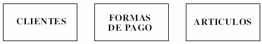
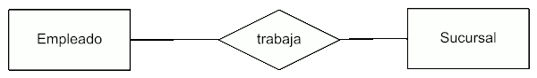
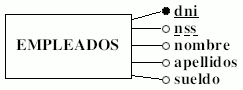
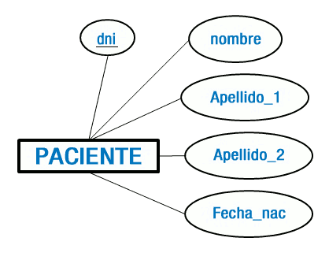
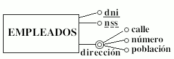
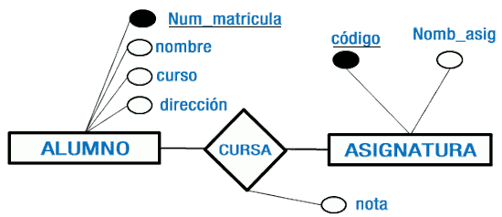

El modelo relacional se basa en el concepto matemático de relación, que se representa gráficamente mediante una tabla.
Construcciones básicas
Entidad
Por entidad entendemos un objeto del mundo real que podemos distinguir del resto de objetos y del que nos interesan algunas propiedades. Algunos ejemplos son: un empleado, un producto, una asignatura, un préstamo bancario, un pedido de un cliente, etc.
En el modelo E-R las entidades se representan con un rectángulo. El nombre de la entidad se escribe en mayúsculas dentro del rectángulo (algunos SGBD no aceptan los acentos en los nombres, por lo que es conveniente no ponerlos).

Relación
Se define Relación (Interrelación) como una asociación entre entidades. Las relaciones se representan en los diagramas del modelo ER mediante un rombo. Junto al rombo se indica el nombre de la relación con letras mayúsculas. Ejemplo: consideremos una entidad EMPLEADO y una entidad DESPACHO y supongamos que a los empleados se les asignan despachos donde trabajar. La relación sería ASIGNACION.

Atributo
Las propiedades de los objetos se denominan atributos. Por lo tanto, las entidades están formadas por atributos. Por ejemplo, sobre una entidad EMPLEADO nos puede interesar tener los siguientes atributos: dni, nss, nombre, apellidos, sueldo, etc.
De entre los atributos habrá uno o un conjunto de ellos que no se repite; a este atributo o conjunto de atributos se le llama clave de la entidad, (para la entidad persona una clave seria dni). Los valores de la clave deben ser únicos (un dni no puede repetirse) y estar formados por el menor número posible de atributos. Si existe más de una posibilidad de atributo, o conjunto de atributos, que identifiquen a una entidad, a uno se le denominará Clave Primaria (subrayado continuo) y a los otros Clave Candidata (subrayado discontinuo).
Los atributos de una entidad se representan mediante elipses o círculos etiquetados, que se conectan por una línea recta a la entidad o relación que califican, cada uno de los cuales tiene que tener un nombre único y que haga referencia a su contenido. Los nombres de los atributos deben ir en minúsculas.
Cada atributo tiene un conjunto de valores asociados denominado dominio. El dominio define todos los valores posibles que puede tomar un atributo.

Los atributos pueden ser:
- Obligatorio / Opcional: un atributo obligatorio es aquél que siempre debe estar definido, como por ejemplo, el que identifica a una entidad (En la entidad EMPLEADO, un atributo obligatorio podría ser 'dni', que no se puede dejar vacío porque gracias a él se identifican todas y cada una de las instancias de esa entidad). Un atributo opcional, en cambio, puede quedar sin definir para algunas de las instancias de la entidad (para EMPLEADO un atributo opcional podría ser 'edad', que es un atributo que no es imprescindible para la identificación de las instancias de la entidad).
- Simples / Compuestos: un atributo simple ( o atómico ) es un atributo que tiene un solo componente, que no se puede dividir en partes más pequeñas que tengan un significado propio, un ejemplo podría ser el "dni" de una persona. Un atributo compuesto es un atributo con varios componentes, cada uno con un significado por sí mismo. Se representa con una doble línea de contorno. Por ejemplo, considerando la "dirección" de una persona como la unión de la calle donde vive, el número y la población. Los atributos compuestos se representan con un círculo conectado con otros círculos, que representan los componentes del atributo, por una línea.
- Univaluado / Multivaluado: un atributo es univaluado si tiene un único valor para cada ocurrencia de una entidad. Es multivaluado si puede tener más de un valor para cada unidad (ejemplo: telefonos). Todos los atributos deben ser univaluados.
- Derivado: Su valor no se guardará en la tabla de una base de datos ya que se obtiene mediante un cálculo, un ejemplo de atributo derivado o calculado es la edad, obtenida a partir de otro atributo: la fecha de nacimiento.
En ocasiones interesa reflejar algunas propiedades de las interrelaciones. Por este motivo, las interrelaciones pueden tener también atributos. Los atributos de las interrelaciones tienen un dominio, deben tomar valores atómicos y deben ser univaluados.
